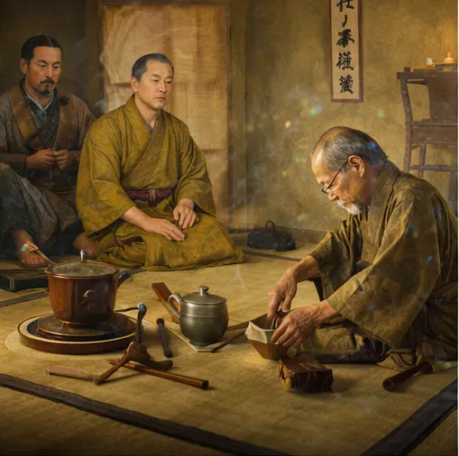

Un viaje que comenzó hace más de mil años

La ceremonia del té japonesa, conocida como Chadō o Sadō (茶道), significa literalmente “El Camino del Té”. Más que una simple bebida,
representa una filosofía de vida basada en la calma, el respeto y la atención al momento presente.
El té llegó a Japón alrededor del siglo IX, traído desde China por monjes budistas que viajaban en busca de conocimiento espiritual. Durante sus largas horas de meditación, el té les ayudaba a mantenerse despiertos y concentrados.
Con el tiempo, lo que comenzó como una práctica simple se transformó en un ritual refinado lleno de simbolismo, estética y espiritualidad.